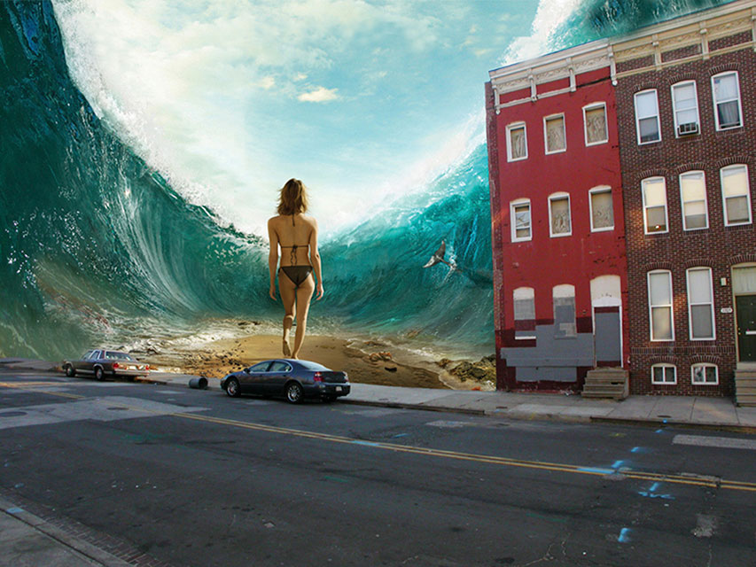

Mart 210
Mart 210| Margaret Sanders Design Mart 210 |
 I am now satisfied with my altered image and want to turn it in to my professor and then make a website explaining it to the world. First, I have to save the file as a tiff in my file named "working" so that I have a saved version of the file with multiple layers. Then I want to go to Image, and Flatten the Image so that all the layers compress into one again and no backwards editing can be done anymore. But flattening the image does not make it small enough to turn in to Simon, therefore I have to save it also as a jpeg file so that I can more easily share it. Also I can put it on the web for all of you to see. Ta-Da!!! |